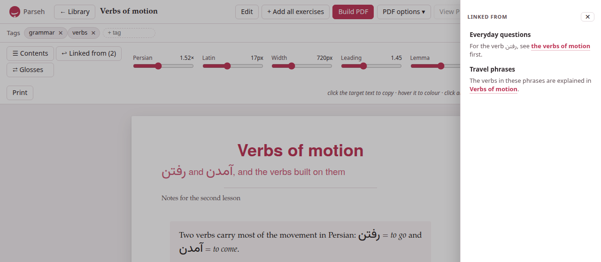

The document page
A click on a card in the library opens the document’s page, /studio/doc/<id>: the document typeset as a sheet in the middle of the window, with the same colours, numbered sections, lemma headings and tables its PDF will have. Three bars stand over it — the top bar, the tags, and the typography — and every one of them can be put away.

1. The top bar#
From the left: Parseh (the hub), ← Library, the document’s title (the whole of it on hover, when it is cut short), and then:
- Edit
- opens the editor.
- + Add all exercises
- copies the page’s exercises into an exercise deck at once: see Reading, annotating and practising. It is there only when the page has an exercise or a gloss to copy.
- Build PDF
- and PDF options ▾ make the PDF, and View PDF shows it in place of the sheet (View web brings the sheet back): see Printing to PDF.
- Download ▾
- — see below.
- ⋯
- holds Duplicate and Delete document.
- Stop server
- stops Parseh, after asking.
2. Tags#
Under the top bar, Tags lists the document’s tags, each with a ✕ to take it off. Type a new one in + tag and press Enter (or a comma): it is added at once, and the box offers the tags the library already has as you type. Tags are stored in lower case. They are how the library’s tag filters find the document.
On the right of the same bar are the badges of the last PDF build: see Printing to PDF.
3. Typography: the third bar#
The third bar sets how the sheet looks. Every setting takes effect as you move it.
| Control | What it sets |
|---|---|
| Persian (the target language’s name) | the size of the target language’s script relative to the Latin text, from 0.8× to 2.6×; the same knob the PDF build uses as its scale |
| Latin | the size of the Latin text, 13 to 23 pixels |
| Width | the width of the text column, 420 to 1,400 pixels |
| Leading | the space between lines, 1.15 to 2 |
| Lemma | the size of the big lemma headings, 2.2× to 4.6× |
| justify | justified text, hyphenated, as in the PDF — or ragged |
| Paper / Sepia / Dark | the page’s theme |
| Reset | everything back to the PDF’s defaults |
| prints the page as it is set, without the bars |
The target size starts where the language’s script looks right beside Latin text — 1.52× for the Arabic script, 1.20× for Japanese, Chinese and Devanagari, 1× for a language written in the Latin alphabet. The Width follows the Latin size, so the two move together; drag the width yourself and it keeps the new proportion from then on.
The settings are remembered for the document, in this browser, and the last ones you set are where every document you have not set yourself starts — the target size only among languages of the same script, so a Persian size never reaches a Japanese page. The theme follows the toolbox’s ◐ theme until you pick one here.
⌃ bars, at the end of the bar, takes all three bars away and leaves one faint ⌄ bars in the corner to bring them back: the whole window for the text. That choice holds for every document, since it is a way of reading rather than a property of a page.
4. Contents#
☰ Contents opens the table of contents as a drawer over the page: the sections, the subsections and the lemma headings, in order. Click one and the page goes there, the drawer closing behind it. Escape, the ✕, or a click beside the drawer closes it too. The sheet stays where it is, centred in the window, whether the drawer is open or not.
5. ↩ Linked from#
↩ Linked from (N) says how many documents of the library link to this one, and opens a drawer from the other side of the page listing them: each document’s title, a link to it, and under it the words around each of its links here, the link itself marked — a Persian line read right to left, an English one left to right. A document links here when it names this one by its name, or by the permanent id of a link written before names; its links to itself are not listed. A document nothing links to says No document links here yet.
The drawer closes on Escape, on its ✕, or on a click beside it. Only one drawer is open at a time: opening ☰ Contents closes it. On a note beside a book or a video it lists the notes of that book or video that link to it.
6. Glosses, colours, exercises#
The page is not only for reading. A click on a word of the target language copies it; pointing at it offers a palette to colour it or write its transliteration; ⇄ Glosses turns every gloss of the document into a table and a flashcard drill; the exercises can be answered and checked; a flashcard opens large with ⤢ Enlarge; and + Deck copies an exercise into a deck. All of it is on Reading, annotating and practising. The hint at the end of the typography bar says the first of it: click the target text to copy · hover it to colour · click an image, or ⚙ on a player, to lay it out.
7. Download ▾#
Download ▾ takes this one document away:
- Markdown (.md)
- — its source, named after its id without the random end (
verbs-of-motion.md). - Markdown + media (.zip)
- — the Markdown with the pictures and recordings it shows, and its tags, in one zip. The library’s Upload .md / .zip takes it back, pictures and all.
- LaTeX (.tex)
- — the
.texthe last PDF was built from. - — the last PDF built.
The last two are greyed out until a PDF has been built. For many documents at once, the library has Download N shown.
8. Duplicate and Delete#
⋯ → Duplicate makes a copy of the document — its text, its tags, its pictures and its recordings — and opens it. The copy is named after the original: Verbs of motion (copy), or (copy 2) when that is taken, in its front matter as in the library, so the two never share a name. It has no PDF of its own yet.
⋯ → Delete document deletes it, after asking — Delete “…” and its builds? This cannot be undone. — and goes back to the library. The document’s folder goes, with its pictures, recordings and PDF; there is no bin. Links to it from other documents stay as they are, waiting for a document of that name (see Names and links).
9. On a phone#
On a narrow screen the top bar and the typography bar are pinned to the top of the window, and both go away as the page moves down and come back on the smallest move up. The typography bar keeps only ☰ Contents, ⇄ Glosses, ↩ Linked from and Aa; Aa opens the typography controls under them, and closes them again. ⌃ bars sits there with the controls. The top bar’s buttons scroll sideways when they do not fit.
↑ Top, in the lower-left corner, takes a long document back to its beginning; it appears once you have scrolled some way down, on every screen.